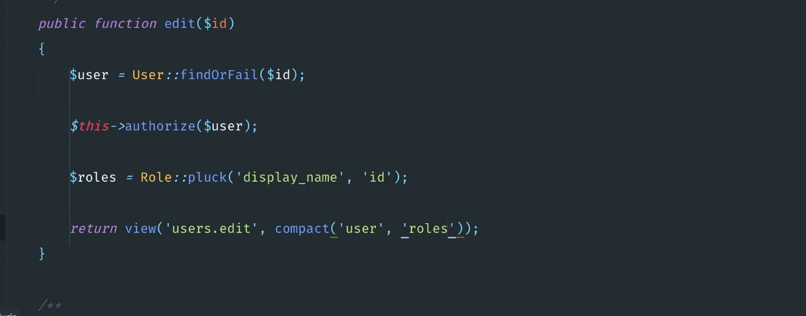
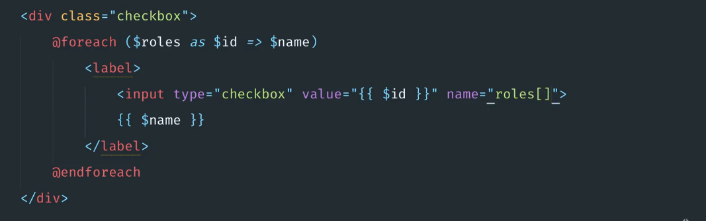
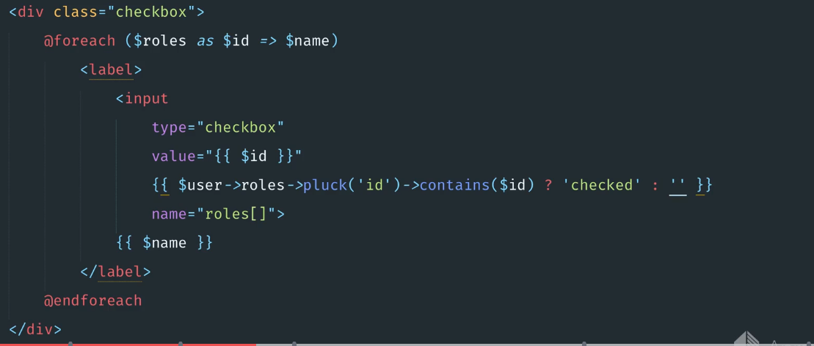
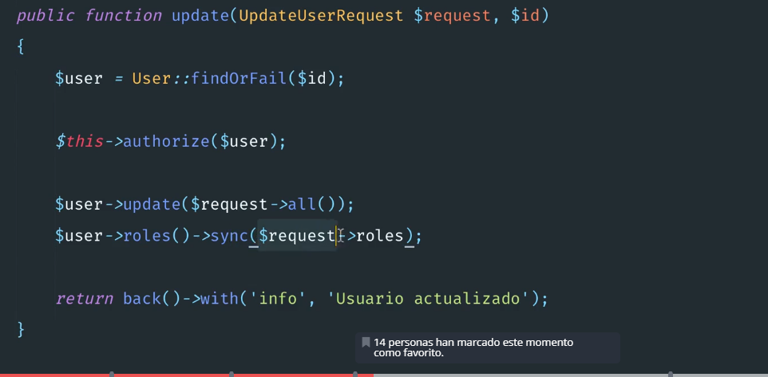

Para mostrar todos los roles y los campos tipo rol.


consulta en Edit.

Para cargar los roles es en controlador.

 se pasa el valor del id.

##segundo paso.

Para mostrar los chekbox.



Ojo se pasan como []  arreglo

Para mostrar el que esta checado.



Para el controlador y guardar los datos con la relación y la sincronización.

